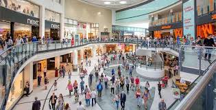
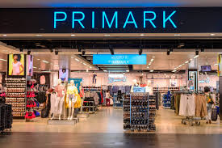
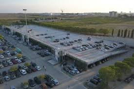
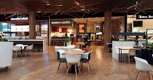
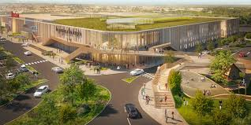
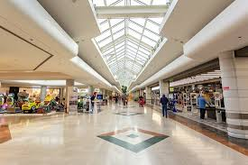

Benvenuti al Centro Commerciale Portici Reali
Il Centro Commerciale Portici Reali rappresenta un punto di riferimento per shopping,intrattenimento e servizi. Grazie alla sua posizione strategica, offre ai visitatori un ambiente moderno, accogliente e facilmente accessibile.
Informazioni utili
- Posizione:Via Roma 25, Milano
- Aperture:Tutti i giorni dalle 9:00 alle 22:00
- Parcheggio: Oltre 1000 posti disponibili
- Servizi: Wi-Fi gratuito, area ristoro e sicurezza 24h
- Trasporti: Collegato con autobus e metropolitana





